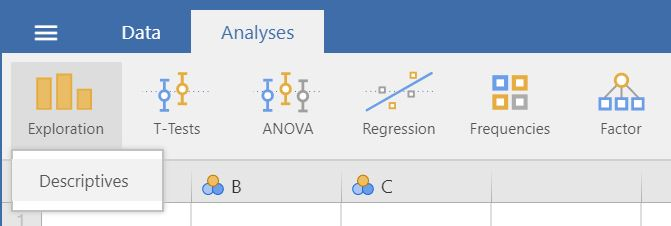
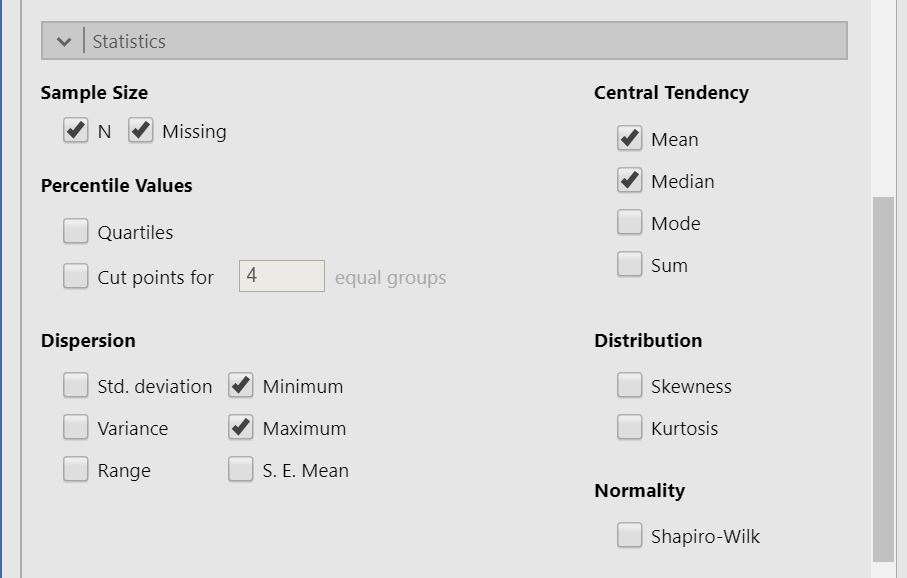
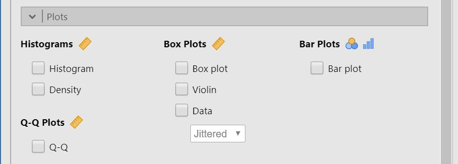

Part 2 Descriptive analyses
This chapter provides an overview of how you perform descriptive analyses and create graphs. If you have not yet loaded and prepared your data, have a look at the previous chapter (1) first.
When you are ready to perform your descriptive analysis, follow the steps below:
Select
Analyses -> Exploration -> Descriptives.
Move the variables you want to descriptive analyses for to Varibles.

The result is shown in the right panel. Right click the output to save or copy it.

To split your descriptive analyses on a categorical variable (e.g. separate by gender), move that variable to Split by.
Click the tab Statistics to see more alternatives 
To create a plot, click Plots and tick a box to create a plot corresponding to your choices in step 2. 